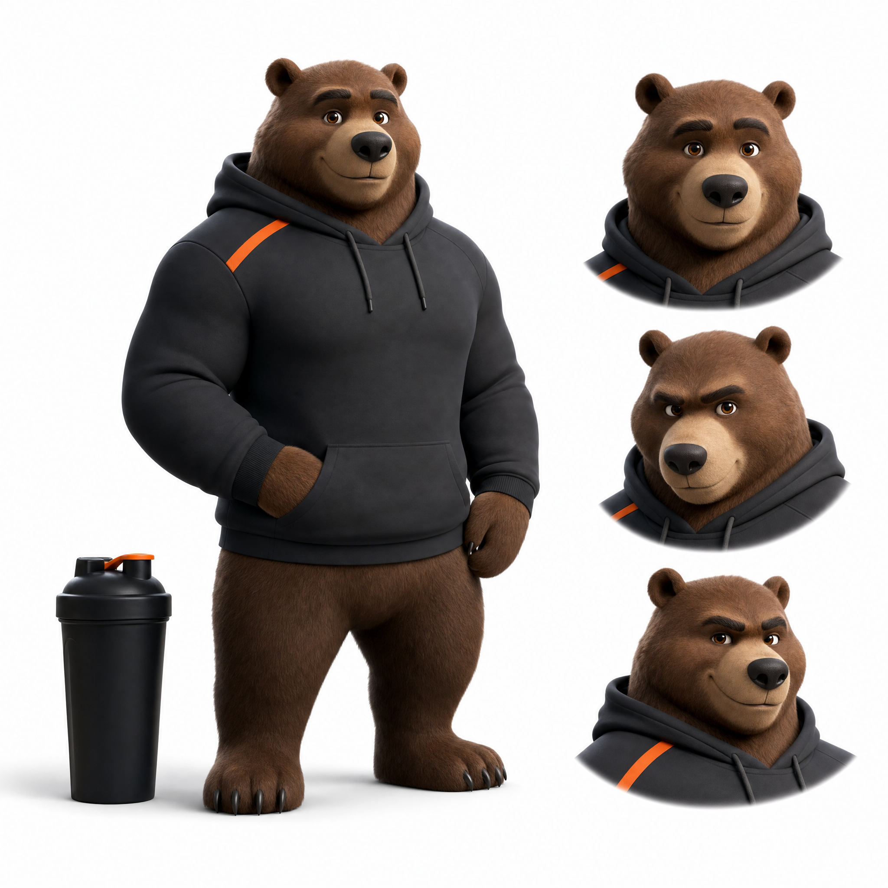
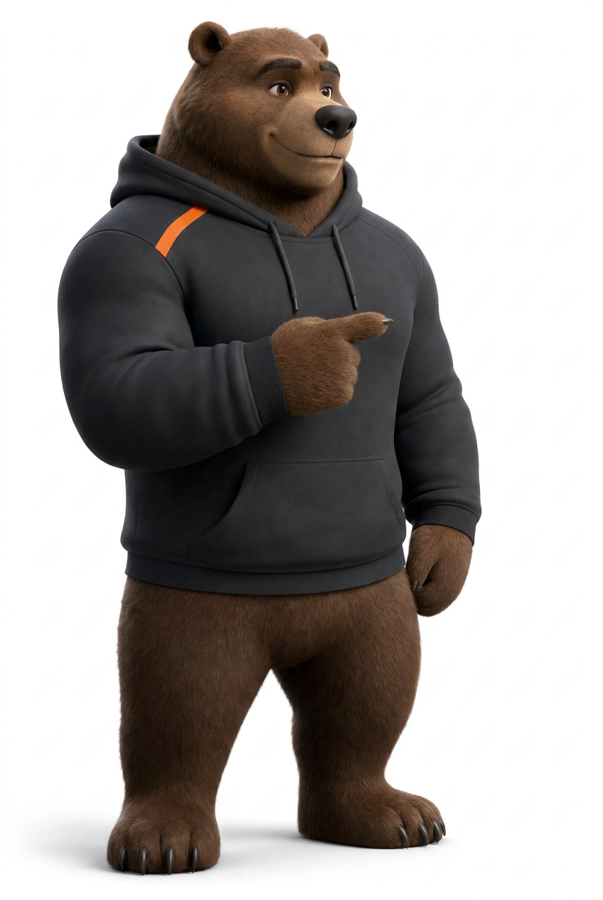
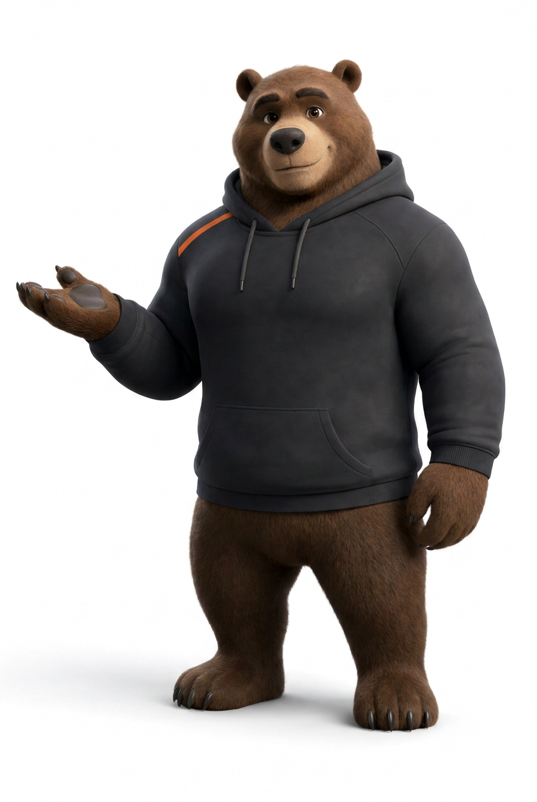
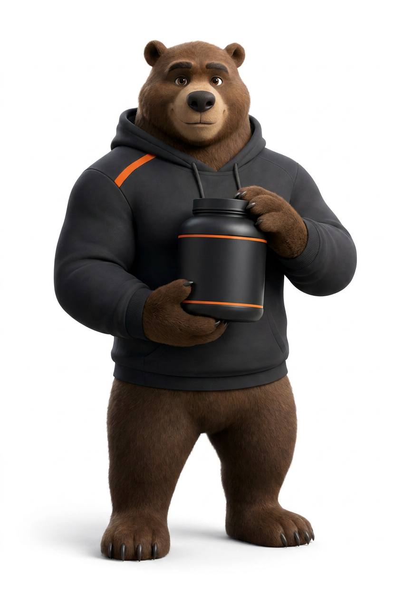
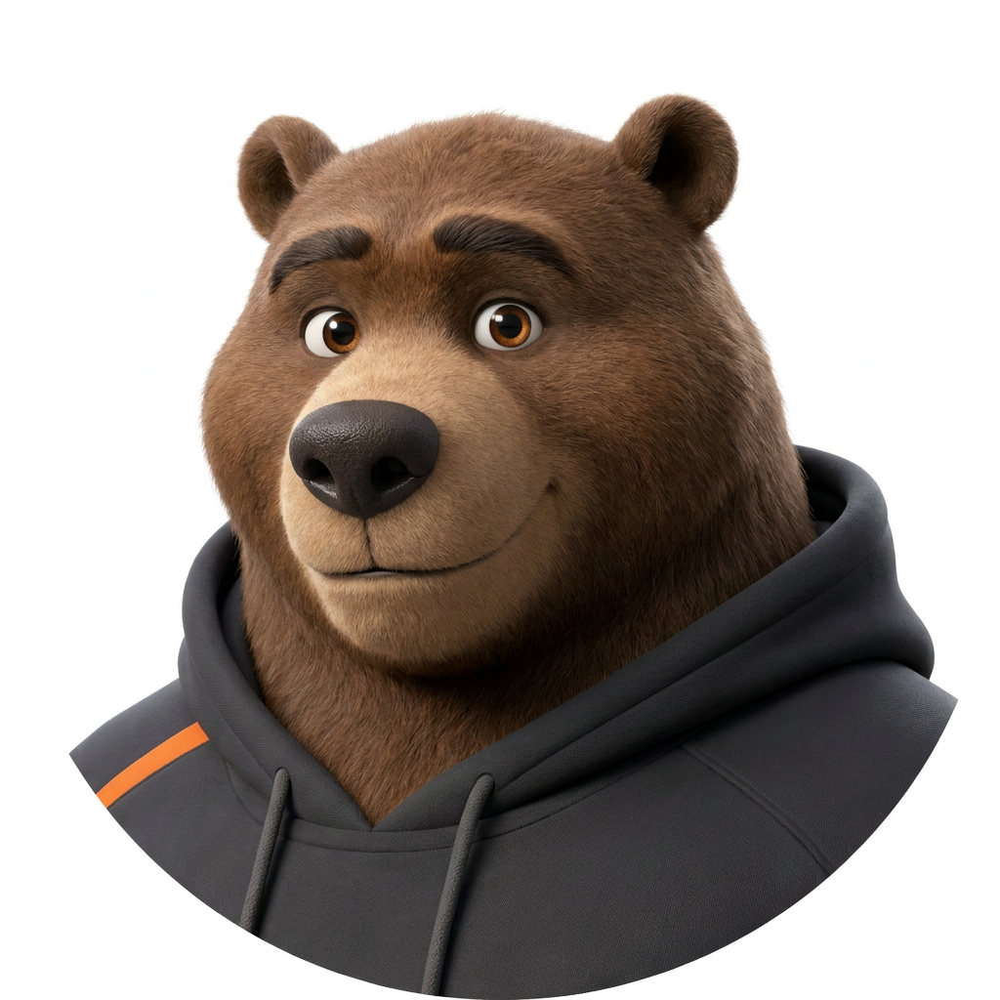
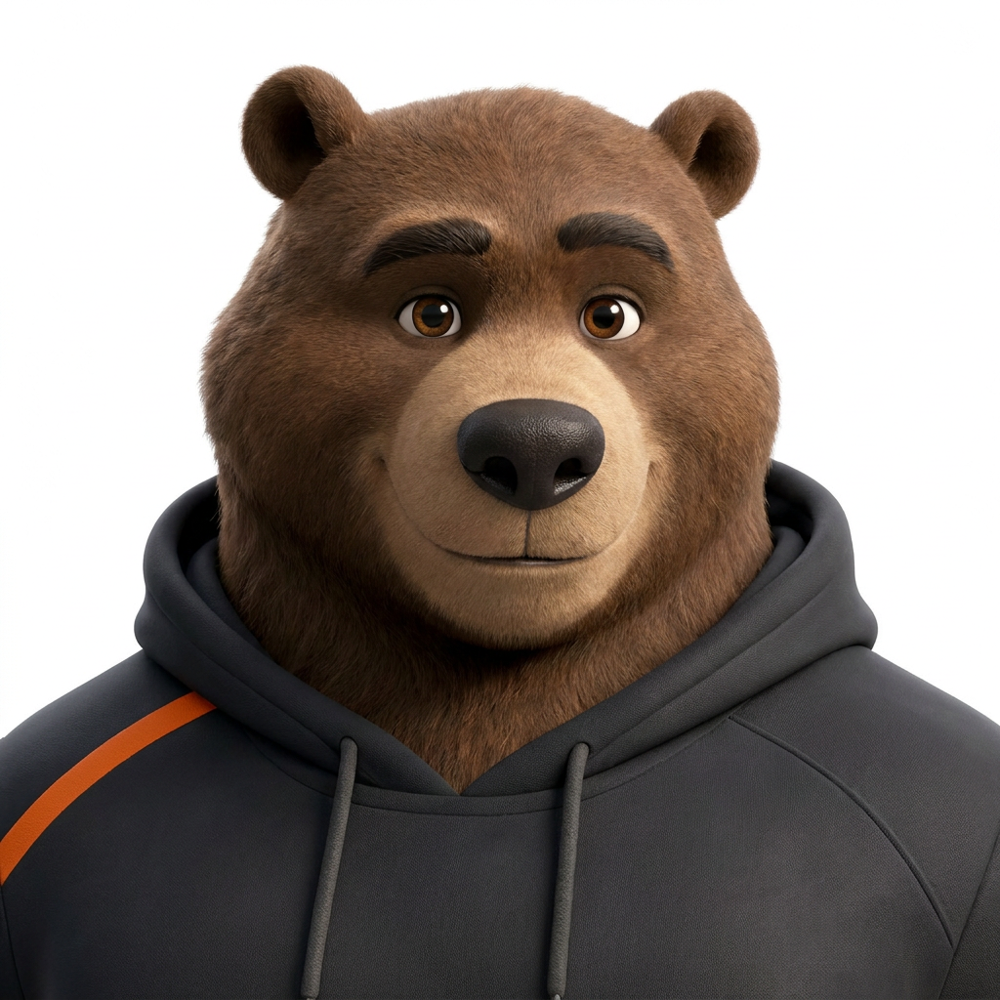
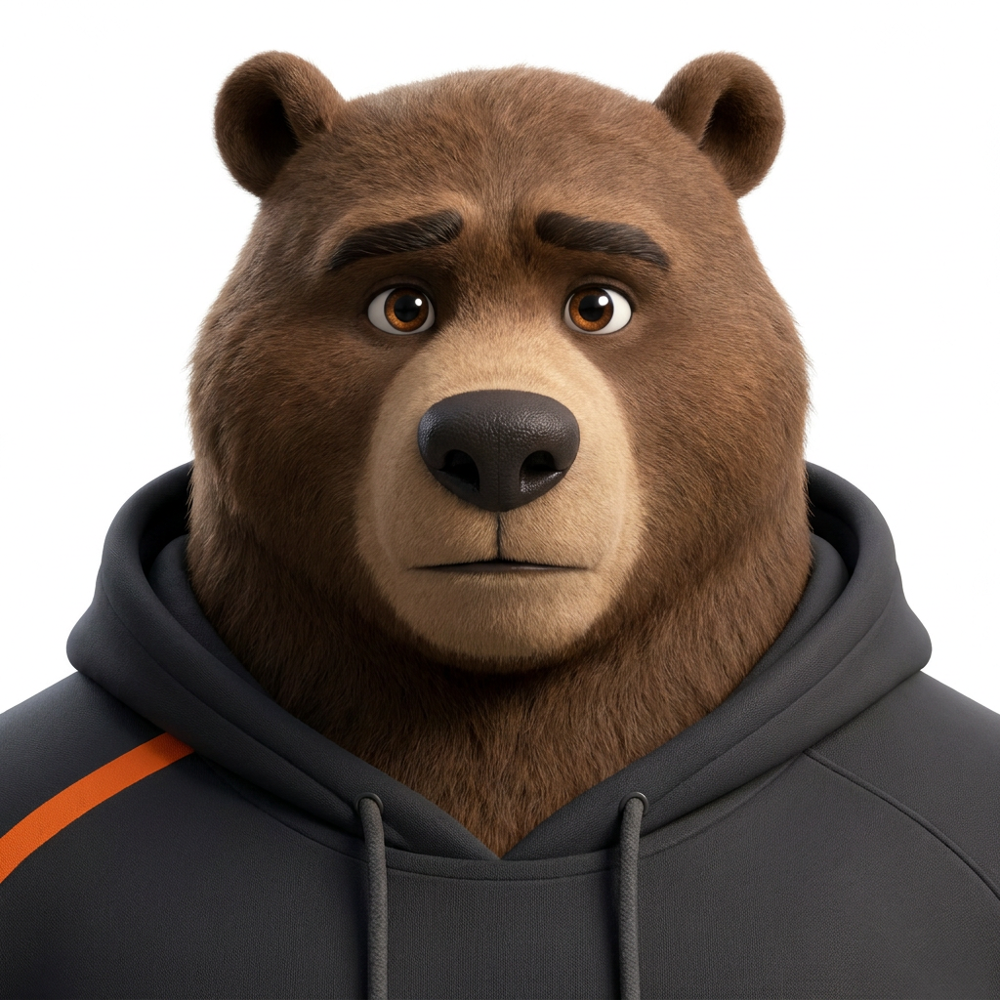

Мова Stack
Знайдена й перевірена візуальна мова: палітра, типографіка, форма, фото та іконки з DESIGN.md, кожне рішення підписане атрибутом. Спершу - мова живцем на компонентах; специфікація нижче. Одна мова, три щільності за контекстом.
Мова живцем
Та сама мова у трьох щільностях (рішення кроку 4): фокус на товарі, щільний тайл для лістингу, гід для новачка. Однакові колір, шрифт, іконки - різна композиція. A1 спокійA4 темпA3 характер
Фокус на товарі

Палітра
Core з DESIGN.md. Оранж - єдиний акцент на дії, ніколи не розсіяний. Нейтраль тепла (нахил до бренду), не чисто-сіра. A1 спокійA4 енергія-акцент
| Пара текст / тло | Контраст | Вердикт | Застосування |
|---|---|---|---|
| A Ink на Canvas | 16.1 : 1 | AAA | основний текст |
| A Ink-2 на Canvas | 10.3 : 1 | AAA | вторинний текст |
| A Muted на Canvas | 6.7 : 1 | AA | підписи, meta |
| A White на Orange | 3.1 : 1 | AA large | мітки кнопок ≥19px/700 |
| A Ink на Orange | 5.2 : 1 | AA | альтернатива на акценті |
| A Success на Canvas | 4.9 : 1 | AA | текст наявності / крапка |
| A Error на Canvas | 5.3 : 1 | AA | помилки |
| A Gold на Canvas | 5.5 : 1 | AA | текст бонусу (темна амбра) |
| A Warning на Canvas | 3.0 : 1 | AA large | лише крапка / великий, не дрібний текст |
Типографіка
Три ролі, кожна зі своєю задачею. Дисплей упевнений, текст простий, цифри моно - як доказ. A4 · упевнений заголовокA5 · простий текстA2 · моно-цифри = довіра
Форма
Радіуси чіткі й помірні, тіні стримані, поверхні пласкі. Спокійно, без важких ефектів. A1 · спокій
Фото
Фото товару - матове чорне на білому (товар як герой картки). Список файлів фіксований у concept.md для відтворюваності. Маскот - у секції нижче. таст · фото-перший, товар на білому
product-whey.png
product-creatine.png
product-preworkout.pngМаскот
Реалістичний 3D-ведмідь: та сама постать, вугільне худі, один оранжевий акцент. Спокійний, компетентний, веде - ніколи не агресивний і не святкує (за voice.md). Живе в героях, онбордингу, порожніх станах, підборі цілі й тренерських моментах. Один актив - різні кадри за контекстом. A3 · характер і теплоA5 · один крокvoice.md · без вітань і свята

brand-mascot-3d-realistic.png






Іконки
Solar-стилістика, inline SVG (не CDN), одна вага. Використання: довіра, метадані, дія, стани. A4 · впевнена вага
Компоненти
Три живі компоненти зі станами: кнопка дії, картка товару з бейджем-довірою, поле форми. A3 · одна дія кнопкоюA2 · доказ довіриA1 · стан каже правду
Кнопка дії
Картка з бейджем-довірою
- Склад
- Походження
Поле форми
Мова на реальному екрані
Та сама мова, покладена на реальний екран - лістинг «Протеїн» (вузол 2.1) з усіма станами. Це кольорові копії в ui-visual/: сірі вайрфрейми лишаються сірими, копія володіє лише візуальним шаром, а не-пофарбовані переходи ведуть на сірий оригінал.
крок 6 · копія, не фарбуванняA1 спокійA2 моно-цифриvoice.md · стани кажуть правду
Повний розділ «UI + Visual» у роадмепі буде на етапі 07. Крок 7 - другий, контрастний екран тією ж мовою.
Стенд не суперечить DESIGN.md - усі значення взяті звідти, кожне рішення підписане атрибутом, контраст перевірено (таблиця вище). Крок 6 виконано - мова живе на реальному екрані в ui-visual/. Далі - крок 7: другий, контрастний екран тією ж мовою, щоб довести, що це мова, а не разова вдача.